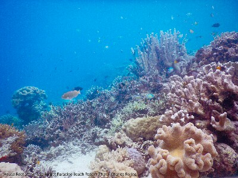
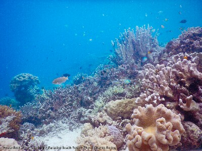
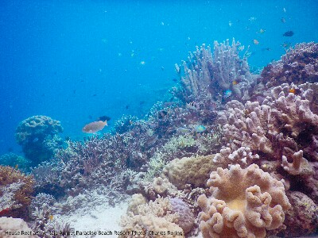
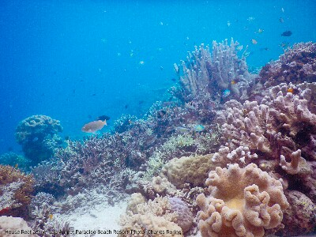

Marine Life in Raja Ampat taken by Nikon W300
Coral Reef in Raja Ampat Islands (Nikon W300)
Marine Life in Raja Ampat taken by Nikon W300
Coral Reef in Raja Ampat Islands (Nikon W300)
 Yellow-tailed Blue Devil Fish taken by Fujifilm XQ2
Marine Life in Raja Ampat taken by Nikon W300
Coral Reef in Raja Ampat Islands (Nikon W300)
Yellow-tailed Blue Devil Fish taken by Fujifilm XQ2
Yellow-tailed Blue Devil Fish taken by Fujifilm XQ2
Marine Life in Raja Ampat taken by Nikon W300
Coral Reef in Raja Ampat Islands (Nikon W300)
Yellow-tailed Blue Devil Fish taken by Fujifilm XQ2
Waterproof cameras are needed to take pictures underwater. Because of my profession as snorkeling guide, I need a good photographic device that is affordable and durable enough for shooting tropical reef fish, seascape, sea star and coral reef environment in general. In the past, I used to have an ordinary Sony pocket camera that I put inside a Dicapac waterproof case. I also used Panasonic Lumix DMC-FT3, Nikon Coolpix AW120, Canon G1X with waterproof case. For a short period of time, I used action camera Brica B-Pro5 Alpha Edition. Today, I use Nikon W300 and Fujifilm XQ2 (with waterproof housing).
The quality of photographs depends on the size of image sensor installed on each camera. But I could say with confidence that Canon G1X gave me very sharp and bright photographs. Nikon compact camera AW120 produced very good photographs whose contrast and brightness were excellent. However, the photographs were lack of details. The Brica B-Pro5 made bright and contrast pictures but had very poor details. But when I stayed calm in the water and let the fish moved closer to me, I could make pictures that were sharp, bright and had good contrast. Brica is a cheap action camera similar to GoPro. My Panasonic DMC-FT3 had poor performance underwater and was not durable enough for tropical region. I used it only once and shortly after it was broken. I was very disappointed with the product.
I often go snorkeling and freediving in the coral reefs of Raja Ampat, Manokwari and Tambrauw. There are a lot of species of fish and other marine creatures that I see while in the water. Last week, I went snorkeling at Warduwer beach of Raja Ampat. I brought my Fujifilm XQ2 and Nikon W300. At first snorkeling and freediving session, I used the Nikon Coolpix W300. I made several wide view pictures of the coral reef environment at drop-off area particularly at depths of 2 to 7 meters below sea level. In the second session of my snorkeling and freediving adventure that morning, I used Fujifilm XQ2. I made tens of underwater pictures.
Overall, Nikon W300 have better contrast. And Fujifilm XQ2 produce photos whose details are better due to larger sensor the camera has. With some editing works in Photodirector application I could enhance the contrast of pictures made by XQ2. The photographs that are shown on the right should not be seen as representation of sample pictures that both camera produce because I have edited and greatly reduced their sizes for use in this website. They should only be considered as optional reference which anyone can consider before deciding to buy a good underwater camera for point and shoot model. If anyone of you ask my advice, I will recommend Nikon W300.
Just a short tip for anyone who wants to try taking pictures underwater while snorkeling or freediving. There are some points that they need to know:
Point and Shoot Underwater Cameras Nikon W300 and Fujifilm XQ2
Taking very good quality underwater pictures while diving without breathing apparatus is difficult. With more practice, one can make excellent photograhs eventhough the camera that he or she uses is only a pocket camera and not the professional D-SLR one. - written by Charles Roring
Related Articles
Copyright 2018